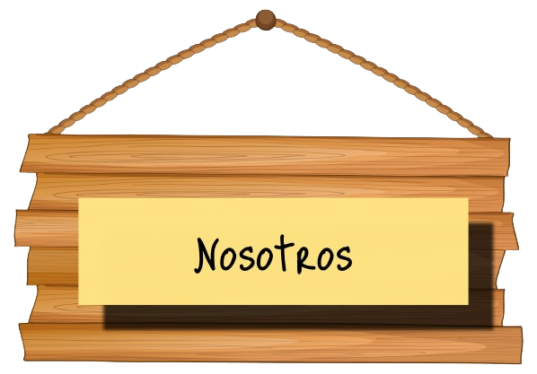
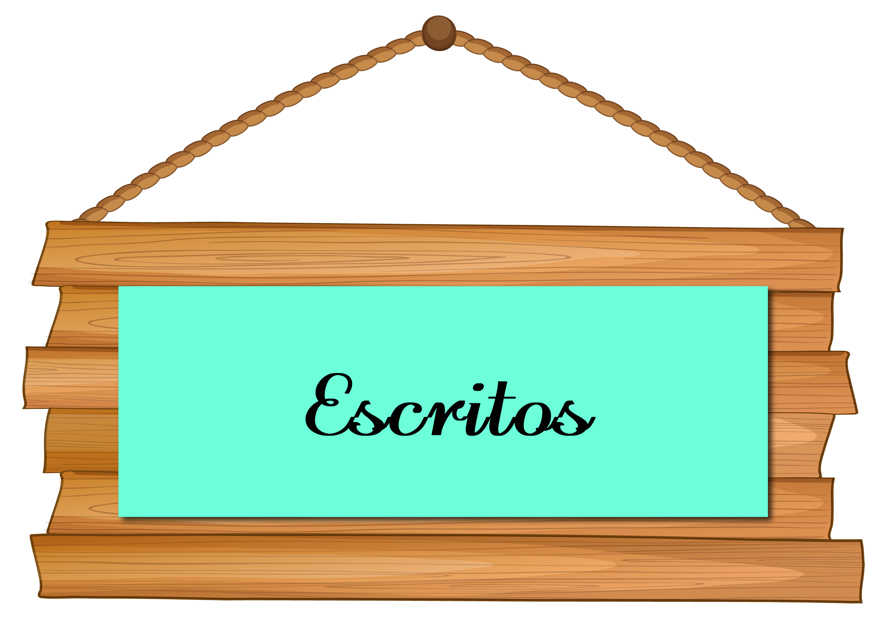
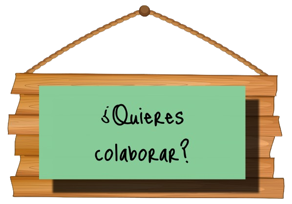
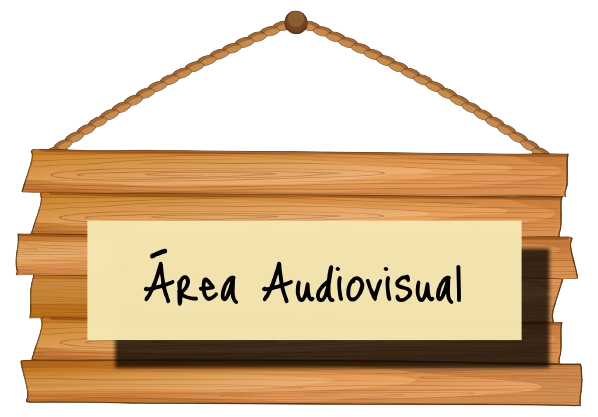

Voces desde el polvo




La sociedad actual se caracteriza por la interconexión a través de los medios digitales. Esto ha propiciado a que reflexionen todas las áreas de conocimiento, entre ellas las Humanidades, puesto que a través de la virtualidad se generan nuevos medios de expresión y se reconfiguran los elementos centrales de la cultura, como lo es el imaginario colectivo. La literatura como uno de los ejes en la construcción de ese imaginario ha adoptado como medio la Internet para dar cabida a nuevas expresiones de creación literaria, expandiendo y problematizando, de este modo, la concepción tradicional de lo que es la literatura. Asimismo, Open Access ha permitido reconfigurar la figura de escritor y del invertigador, ofreciendo elementos casi infinitos en el ámbito académico.
|